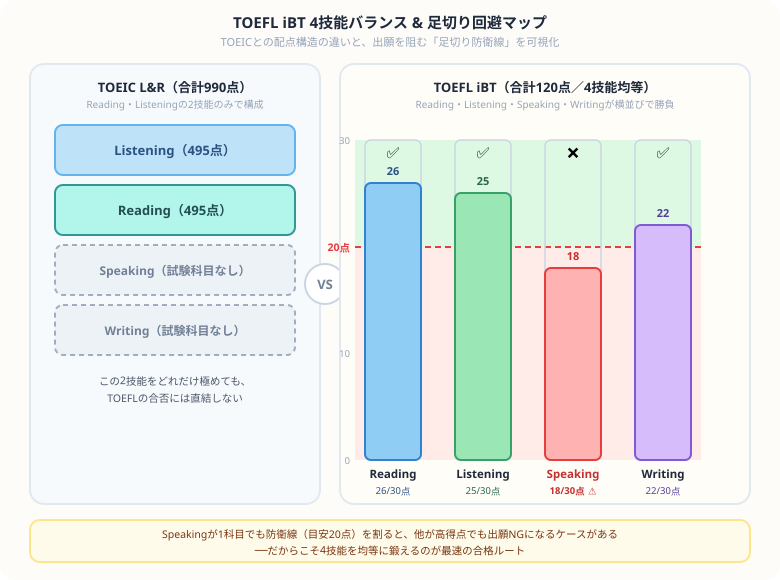

TOEFL iBTの独学スコアアップ戦略【2026年版】留学・大学院に必要なスコアと勉強法
『世界へ飛び出すためにTOEFL iBTを取ろう！』と決意してテキストを開いた瞬間……『うわっ、なんじゃこりゃ、TOEICと違ってスピーキングもライティングもある上に、受験料が3万円超えって1回も失敗できないじゃん！』とフリーズしていませんか？（笑）
毎日会計士という超巨大な難関資格と格闘している僕の視点から、この広大な4技能の山をゲーム感覚でサクッと攻略し、留学の切符を確実に掴み取るための【4技能逆算スケジュール】を優しくナビゲートします！
また、記事の末尾のほうにある【いいねボタン】をポチッと押してもらえると、めちゃくちゃ励みになりますしすごく嬉しいです！それでは、一緒に4技能の山を攻略していきましょう！
TOEFL iBT（Test of English as a Foreign Language）は、海外の大学・大学院・語学学校への留学で必要とされる英語能力試験です。Reading・Listening・Speaking・Writingの4技能すべてが測定される本格派で、正直「TOEICの延長線上」くらいに考えていると痛い目を見ます。目的も難易度も別次元だと思って、腰を据えて一緒に攻略していきましょう。
TOEFL iBTの基本情報
| 項目 | 内容 |
|---|---|
| 満点 | 120点（各技能30点×4） |
| 試験時間 | 約2時間（2023年改定後） |
| 試験方式 | IBT（インターネット方式） |
| 受験頻度 | 随時（年間6〜7回程度） |
| 受験料 | 約31,000円（為替により変動） |
| スコア有効期限 | 2年間 |
目標スコア別 必要勉強時間
| 目標スコア | 目安の英語力 | 必要勉強時間 |
|---|---|---|
| 〜60点 | 英検2級・TOEIC 500点レベルから | 200〜300時間 |
| 61〜79点 | 英検準1級・TOEIC 700点レベルから | 300〜500時間 |
| 80〜99点 | TOEIC 800点レベルから | 500〜800時間 |
| 100点以上 | TOEIC 900点以上から | 800〜1500時間 |
留学先別 必要スコアの目安
| 留学先・目的 | 必要スコアの目安 |
|---|---|
| 海外語学学校（短期留学） | 45〜60点 |
| 海外大学（学部） | 61〜80点 |
| 海外大学院（修士・MBA） | 80〜100点 |
| アイビーリーグ・一流大学院 | 100点以上 |
| 国内大学院の英語プログラム | 72〜80点 |
学習計画の前に、まず敵の正体を正確に把握しましょう。下の図は、TOEICとの配点構造の違いと、出願を阻む「足切り防衛線」を一発で可視化した戦略マップです。TOEICにはそもそも存在しないSpeaking・Writingという2つのハコが、TOEFLでは他の2技能と全く同じ重みで襲いかかってきます。

4技能別攻略法
Reading（読解）：論文・学術文章への慣れが鍵
大学の教科書レベルの英文（歴史・科学・社会科学）が出題されます。ここはTOEICで鍛えた読解力の貯金がそのまま活きるハコなので、語彙力の強化と速読練習で着実に守備範囲を広げましょう。「THE ECONOMIST」「Scientific American」などの英文を毎日読む習慣をつければ、防衛線は余裕で超えられます。
Listening（聴解）：講義・ディスカッション形式
大学の講義スタイルのリスニングで、TOEICのビジネス英語とは毛色が違います。TED Talks・Coursera（英語）などを活用してアカデミック英語のリスニングに慣れましょう。メモを取りながら聴く練習が本番で必ず活きます。
Speaking（スピーキング）：独立型・統合型の2種類
ここが最大の壁であり、多くの日本人受験者が防衛線割れを起こす鬼門です。「意見→理由→具体例」のテンプレート構造で回答する練習を繰り返すことが最短ルート。オンライン英会話やAIとの会話練習を毎日実施して、この筋肉を今日から鍛え始めましょう。後回しにするほど後で泣きます。
Writing（ライティング）：統合型・ディスカッション型
読んで・聴いて・書く統合型と、意見を述べるディスカッション型の2種類。パラグラフライティングの基本構造（Topic Sentence → Support → Conclusion）を身につければ、ここも確実に防衛線を超えられます。型を覚えるだけで得点が跳ねる、コスパの良いハコです。
まとめ：4技能を均等に鍛えるのが最速の合格ルート
- TOEFLは留学・海外大学院向けの4技能試験（満点120点）で、TOEICとは別次元の試験だと心得る
- 80点取得に約500〜800時間の学習が必要——逆算スケジュールで今日から積み上げる
- Speakingが最大の壁。1科目でも防衛線を割ると出願NGになりうるので、後回しにしない
- オンライン英会話との併用がSpeaking対策には効果的
- スコアの有効期限は2年間。出願スケジュールから逆算して受験日を決める
日本という慣れ親しんだ環境を飛び出して、言葉も文化も違う世界に挑もうとしているあなたは、本当に勇気のある最高の仲間だと心から思っています。Speakingで思うように話せず悔しい思いをする日も、きっとあるはずです。それでも机に向かい続けるその姿勢が、留学の切符を確実に手繰り寄せます。この記事が、あなたの4技能攻略の道しるべになれば最高に嬉しいです。もし少しでも役に立ったら、僕の毎日の執筆モチベーション維持のために、この下にある【いいねボタン】をポチッと押してもらえると、めちゃくちゃ励みになります！一緒に、世界への切符を掴み取りましょう！